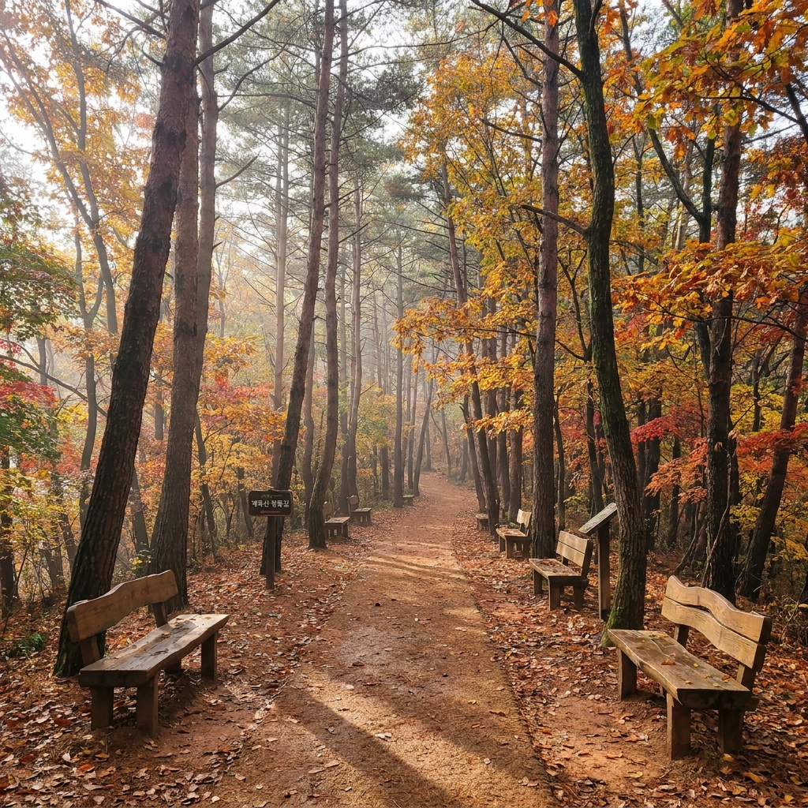
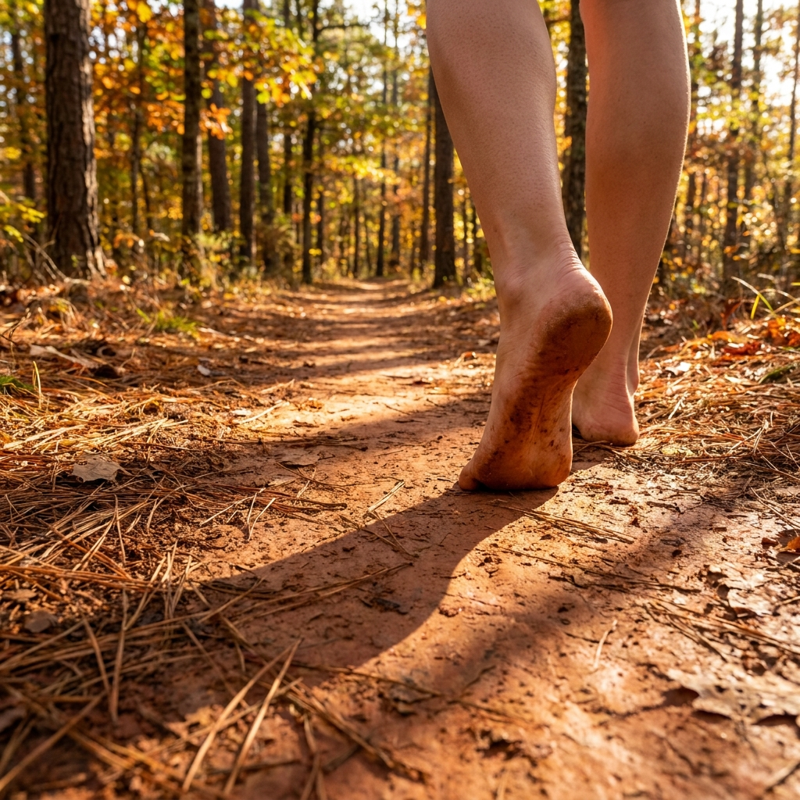
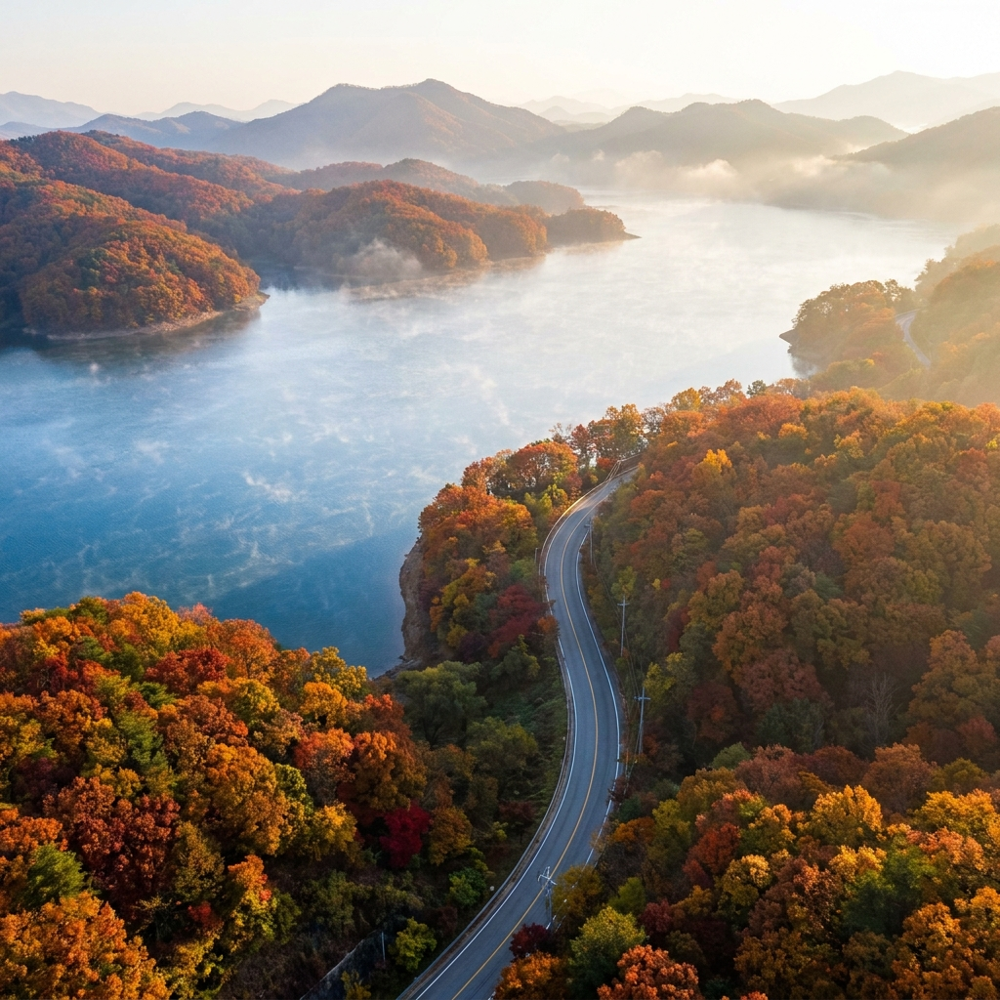

대전 계족산 황톳길 10월 맨발 걷기와 대청호 드라이브 — 장동산림욕장 세족장 위치와 주차 팁
청명한 가을바람과 함께 부드러운 흙의 감촉을 온몸으로 느끼는 10월 계족산 황톳길 맨발 걷기입니다.
대전 대덕구 계족산에 조성된 14.5km 길이의 붉은 황톳길은 한국관광공사가 선정한 힐링 명소로, 신발을 벗고 촉촉한 흙길을 걸으며 지친 몸과 마음을 정화하기에 가장 이상적인 여행지입니다. 맨발 걷기 후 인근 대청호 오백리길로 이어지는 수변 드라이브 코스까지 묶으면 완벽한 당일치기 가을 힐링 여행이 완성됩니다.

10월 단풍 숲속으로 이어지는 대전 계족산 붉은 황톳길 / AI 제작 이미지
01 | 전국 최초 14.5km 붉은 흙길, 대전 계족산 황톳길의 매력
대전광역시 대덕구 장동에 위치한 계족산(해발 423m) 둘레길에는 전 세계적으로도 유례를 찾기 힘든 총연장 14.5km의 명품 황톳길이 펼쳐져 있습니다.
임도(林道) 한쪽에 순수 황토를 두껍게 깔아 정기적으로 물을 뿌리고 관리하여 사계절 내내 촉촉하고 차진 흙의 촉감을 고스란히 느낄 수 있습니다.
일반 흙길과 달리 잘 정제된 부드러운 황토가 깔려 있어 돌멩이나 나뭇가지에 발을 다칠 염려가 적고, 남녀노소 누구나 부담 없이 맨발로 걸을 수 있는 것이 가장 큰 매력입니다.
피톤치드를 뿜어내는 울창한 솔숲과 활엽수림이 10월을 맞아 노랗고 붉게 물들어가면서, 걸음을 옮길 때마다 발밑의 촉촉함과 눈앞의 가을 절경이 동시에 오감을 사로잡습니다.
02 | 10월 황톳길 맨발 걷기 적기와 발바닥 건강 효과
여름철 무더위가 물러가고 겨울 한파가 오기 전인 10월은 황톳길 맨발 걷기를 즐기기에 일 년 중 가장 최적의 시기입니다.
11월 중순 이후 기온이 영하권으로 떨어지면 황토가 얼어붙어 맨발로 걷기 어렵기 때문에, 가을볕이 따사로운 10월의 오후 시간대는 놓칠 수 없는 골든타임입니다.
맨발 걷기(어싱, Earthing)는 발바닥의 반사구를 자극하여 혈액순환을 원활하게 하고 체내 염증 완화와 스트레스 해소에 탁월한 효과가 있는 것으로 널리 알려져 있습니다.
차진 황토의 음이온과 원적외선은 발의 피로를 풀어주고 자율신경계를 안정시켜 불면증 개선과 활력 증진에 큰 도움을 줍니다.
03 | 장동산림욕장 출발 추천 코스와 세족장 위치 안내
계족산 황톳길 탐방의 베이스캠프는 장동산림욕장 입구입니다.
산림욕장 관리사무소를 지나 완만한 임도를 따라 올라가면 본격적인 황톳길 시작점이 나타납니다.
| 탐방 코스 구분 |
구간 경로 |
소요 시간 및 거리 |
난이도 및 특징 |
| 가벼운 산책 코스 |
관리소 → 숲속음악회장 → 원점회귀 |
왕복 약 1시간 (약 3.0km) |
초보자 및 가족 동반 추천, 평지 |
| 산성 연계 힐링 코스 |
관리소 → 다목적광장 → 계족산성 갈림길 |
왕복 약 2시간 30분 (약 7.0km) |
적당한 운동량, 조망 명소 포함 |
| 순환 풀코스 (종주) |
계족산 둘레길 임도 14.5km 한 바퀴 |
약 4시간 30분 ~ 5시간 |
중상급 트레킹, 체력 필요 |
주요 세족장(발 씻는 곳) 위치:
• 제1세족장: 장동산림욕장 입구 관리사무소 맞은편 (에어건 및 수돗가 구비)
• 제2세족장: 숲속음악회장 옆 쉼터 (중간 반환점 지점)
• 제3세족장: 원점 회귀 임도 주요 교차로
걷기를 마친 후 신발을 신기 전 세족장에서 시원한 지하수로 발을 깨끗이 씻고 수건으로 물기를 닦아낼 수 있도록 배려되어 있습니다.

부드러운 황토 위를 맨발로 걸으며 자연을 느끼는 순간 / AI 제작 이미지
04 | 계족산성 정상에서 조망하는 대청호 가을 비경
황톳길을 걷다 보면 산 능선 위로 이어지는 계족산성(사적 제355호) 등산로 이정표를 만날 수 있습니다.
삼국시대 백제 때 축조된 석축 산성으로, 계족산 정상부 능선을 따라 약 1km 길이로 견고하게 복원되어 있습니다.
황톳길 임도에서 신발을 갈아 신고 약 20분 정도 계단을 올라 계족산성 서문터에 닿으면 탄성이 절로 터져 나옵니다.
굽이굽이 산줄기 사이로 푸르게 펼쳐진 대청호의 물줄기와 주변 산자락을 물들인 가을 단풍이 한 폭의 진경산수화처럼 눈앞에 펼쳐집니다.
탁 트인 시야 덕분에 날씨가 맑은 날에는 대전 도심 전경은 물론 멀리 계룡산 연천봉 능선까지 선명하게 조망할 수 있습니다.
05 | 맨발 걷기 초보자를 위한 필수 준비물과 세족 요령
맨발 걷기를 처음 경험하는 초보자라면 몇 가지 소지품을 챙겨가는 것만으로도 산책의 질이 크게 향상됩니다.
👣 계족산 맨발 걷기 준비물 및 실전 꿀팁
1. 신발주머니 (비닐백 또는 에코백): 벗은 신발과 양말을 담아 손에 들고 걷거나 배낭에 넣을 가방 준비
2. 개인 수건 및 물티슈: 세족장에서 발을 씻은 후 물기를 보송보송하게 닦아낼 작은 스포츠 타월 필수
3. 신발 착용 기준: 황톳길 구간만 맨발로 걷고, 계족산성 등산로나 비포장 돌길에서는 반드시 등산화 착용
4. 발바닥 적응법: 처음부터 빠르게 걷지 말고 발바닥 전체로 지면을 부드럽게 누르며 천천히 보행
5. 피부 보호: 걷기 후 세족 시 비누칠을 너무 세게 하지 말고, 귀가 후 풋크림을 발라 보습 유지
06 | 장동산림욕장 주차장 현황과 대중교통 시내버스 노선
가을 성수기 주말에는 전국 각지에서 모여든 단체 관광객과 가족 나들이 차량으로 주차장이 붐비므로 아침 일찍 방문하는 것이 유리합니다.
| 주차 공간 구분 |
위치 및 특징 |
주차 요금 |
| 장동산림욕장 제1주차장 |
산림욕장 입구 최인접 (약 80대 수용) |
무료 |
| 장동 제2·제3 임시주차장 |
진입로 초입 및 장동초등학교 인근 |
무료 |
대중교통 안내:
• 대전역 또는 대전복합터미널에서 74번 외곽 시내버스 탑승 후 '장동산림욕장' 종점 하차.
• 신탄진역 방면에서 출발할 경우 74번 버스를 이용하면 약 25분 만에 산림욕장 입구에 도착할 수 있습니다. (배차간격 약 40분 내외이므로 버스 시간표 사전 확인 필수)

계족산 탐방 후 이어지는 대청호 오백리길 가을 수변 드라이브 / AI 제작 이미지
07 | 대청호 오백리길 연계 가을 드라이브 명소
계족산 황톳길 산책을 마친 뒤에는 차로 15~20분 거리에 있는 대청호 오백리길로 이동하여 가을 드라이브를 즐기는 코스를 강력 추천합니다.
대청호반을 따라 조성된 수변 도로는 양옆으로 단풍나무와 억새 군락이 어우러져 전국에서도 손꼽히는 아름다운 드라이브 웨이입니다.
특히 대청호 자연수변공원과 슬픈연가 촬영지(명상골)는 은빛 억새와 호수 물결이 어우러져 인생 사진을 남기기에 더없이 훌륭합니다.
호수를 조망할 수 있는 전망 좋은 베이커리 카페들이 도로변에 자리 잡고 있어, 따뜻한 커피 한 잔과 함께 가을 호수의 고요함을 음미할 수 있습니다.
08 | 계족산 주변 먹거리와 가을 별미 추천
장동산림욕장 입구와 인근 신탄진, 대청호 주변에는 걷기 운동 후 허기를 달래줄 푸짐한 로컬 맛집들이 풍성합니다.
• 장동 보리밥 & 도토리묵: 장동산림욕장 진입로변에는 신선한 산나물과 구수한 된장찌개를 곁들인 보리밥, 그리고 탱글탱글한 도토리묵 무침을 내놓는 식당들이 많습니다.
• 대청호 민물매운탕 & 어죽: 대청호 특유의 쏘가리, 빠가사리 매운탕이나 칼칼하고 진한 어죽 국수는 쌀쌀해진 가을 날씨에 몸을 따뜻하게 데워주는 일품 보양식입니다.
• 신탄진 석갈비: 숯불에 구워져 돌판 위에 지글지글 나오는 담백한 돼지 석갈비는 가족 단위 여행객에게 인기 만점입니다.
09 | 계족산 황톳길 & 대청호 당일치기 힐링 여행 일정표
아침부터 늦은 오후까지 자연을 만끽할 수 있는 알찬 하루 여행 일정표입니다.
| 시간대 |
주요 이동 동선 |
활동 및 관람 포인트 |
| 09:30 ~ 10:00 |
장동산림욕장 도착 및 주차 |
제1주차장 주차 및 신발주머니, 수건 준비 |
| 10:00 ~ 12:00 |
황톳길 맨발 걷기 (왕복 4km) |
촉촉한 흙길 걷기, 숲속음악회장 쉼터 휴식, 발 지압 |
| 12:00 ~ 12:30 |
세족장 발 씻기 및 정비 |
지하수 세족 후 발 말리기 및 신발 착용 |
| 12:30 ~ 14:00 |
점심 식사 (장동 또는 신탄진) |
시골 보리밥과 도토리묵전으로 건강한 한 끼 |
| 14:00 ~ 16:30 |
대청호 오백리길 드라이브 & 카페 |
대청호 수변공원 억새밭 산책, 호수 뷰 카페 티타임 |
| 16:30 ~ |
귀가 및 일정 마무리 |
신탄진IC 또는 대전IC 진입 후 안전 귀가 |
#계족산황톳길
#대전맨발걷기
#장동산림욕장
#계족산성
#대청호오백리길
#대청호드라이브
#대전가을여행
#어싱명소
#대전힐링코스
#가을당일치기여행